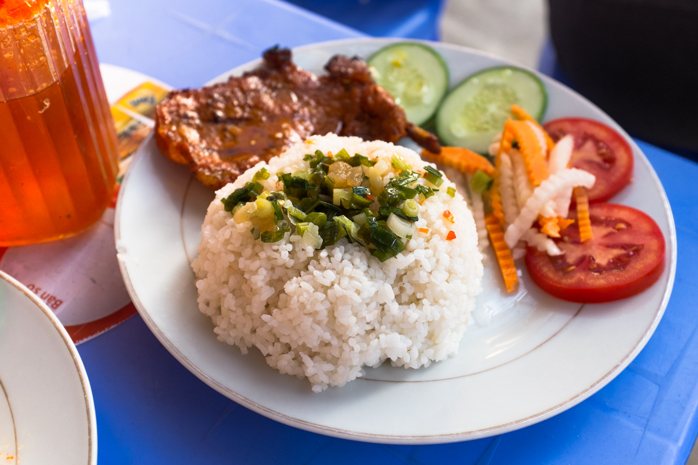
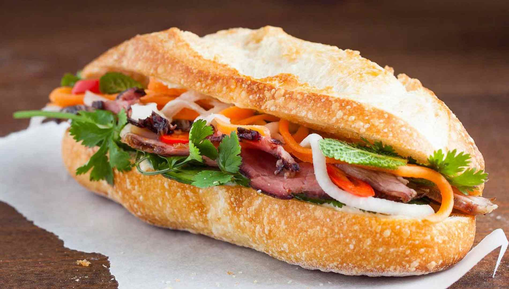
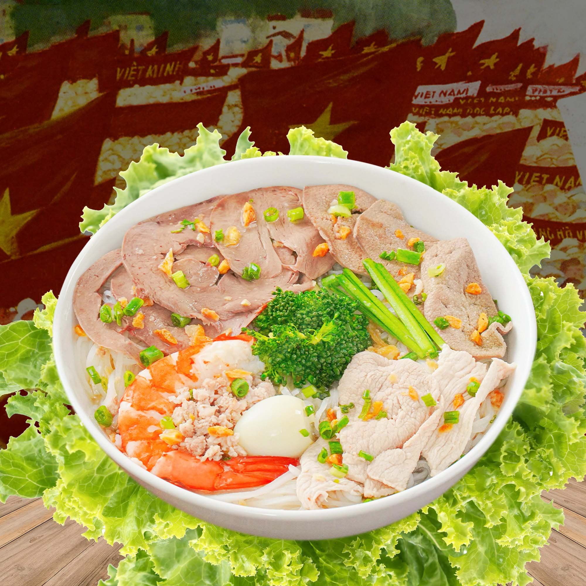
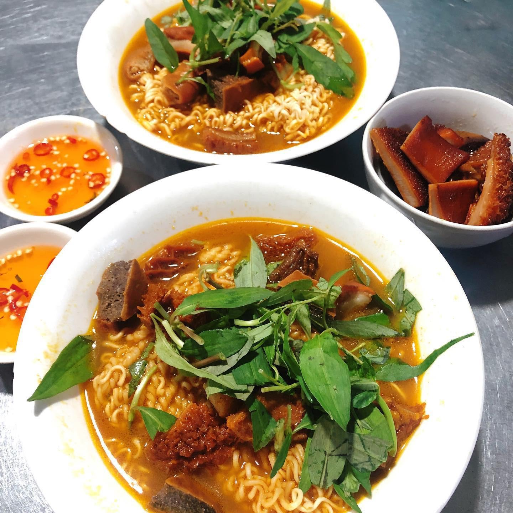
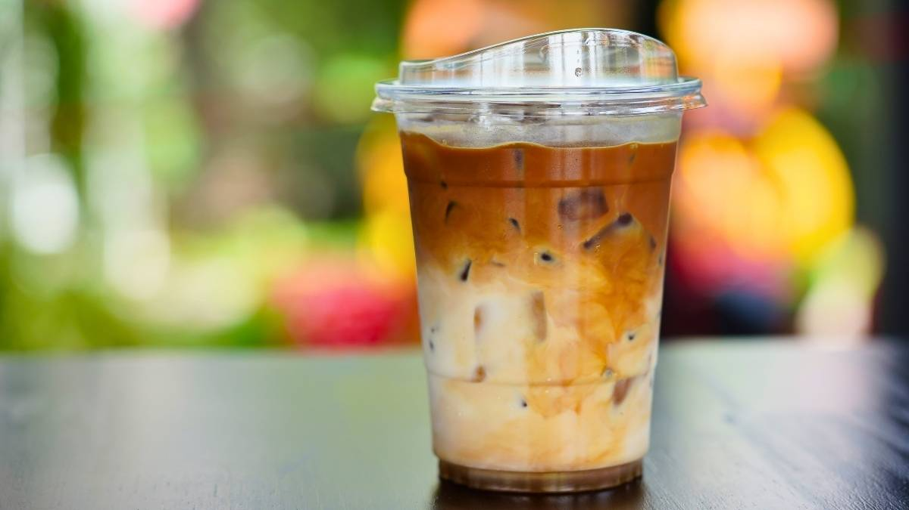

I. Đặc sản TP. Hồ Chí Minh có gì?
Đặc sản của TP. Hồ Chí Minh rất đa dạng và phong phú, nổi bật là món ăn đường phố kết hợp các đặc sản mua làm quà.
Đặc sản có thể được chia làm hai nhóm chính:
Món ăn bản địa: Những món đã gắn liền với lịch sử hình thành vùng đất Gia Định xưa.
Món ăn giao thoa: Những món từ vùng khác (Miền Tây, Miền Trung, hoặc từ cộng đồng người Hoa) du nhập vào, được biến tấu lại để phù hợp với khẩu vị người Sài Gòn.
II. Điểm đặc biệt của đặc sản Sài Gòn
- Điều làm nên sức hút của ẩm thực nơi đây không nằm ở sự cầu kỳ, sang trọng mà ở:
- Sự phóng khoáng và đa dạng: Bạn có thể tìm thấy món ăn từ bình dân vỉa hè đến nhà hàng cao cấp.
- Vị ngọt đặc trưng: Người Sài Gòn thường ưa chuộng vị ngọt thanh từ đường hoặc nước dừa trong các món kho, nấu.
- Văn hóa "mở": Luôn sẵn sàng tiếp nhận cái mới, biến tấu món ăn gốc thành một phiên bản mới mẻ hơn (ví dụ: Bánh mì kẹp đủ thứ nhân hay Phá lấu ăn kèm bánh mì).
III. Một số ví dụ điển hình

Cơm tấm
Được mệnh danh là "linh hồn" của thành phố. Một đĩa cơm tấm sườn bì chả với nước mắm kẹo ngọt cay là hình ảnh quen thuộc từ sáng sớm đến đêm muộn.

Bánh mì Sài Gòn
Không chỉ là món ăn sáng, bánh mì Sài Gòn là biểu tượng toàn cầu với sự kết hợp hoàn hảo giữa vỏ bánh giòn và nhân pate, bơ, thịt nguội, đồ chua.

Hủ tiếu Nam Vang
Dù có nguồn gốc từ Campuchia và do người Hoa chế biến, nhưng khi về Sài Gòn, nó đã trở thành món ăn quốc dân với nước dùng đậm đà từ xương ống và mực khô.

Phá lấu
Một món ăn vặt kinh điển của học sinh, sinh viên, thường ăn kèm với bánh mì hoặc mì gói.

Cà phê sữa đá
Một "đặc sản văn hóa" không thể thiếu trong nếp sống hằng ngày của người dân nơi đây.
IV. Vai trò đóng góp mang đến với Thành phố
- Kinh tế: Là ngành mũi nhọn trong dịch vụ và du lịch. Các tour ẩm thực (food tour) bằng xe máy đang cực kỳ hút khách quốc tế.
- Văn hóa: Phản ánh tính cách con người Sài Gòn: cởi mở, chân thành và năng động. Nó giúp gắn kết cộng đồng cư dân từ nhiều địa phương khác nhau.
- Thương hiệu: Giúp nâng cao vị thế của TP.HCM trên bản đồ du lịch thế giới (nhiều món ăn đã được vinh danh bởi Michelin hoặc các tạp chí du lịch lớn).
TP Hồ Chí Minh không chỉ là trung tâm kinh tế sôi động mà còn là nơi hội tụ tinh hoa ẩm thực từ khắp mọi miền. Những món đặc sản nơi đây không chỉ mang hương vị riêng biệt mà còn thể hiện sự giao thoa văn hóa độc đáo của vùng đất này. Vì vậy, khi nhắc đến TP Hồ Chí Minh, người ta không chỉ nhớ đến nhịp sống hiện đại mà còn nhớ đến một “thiên đường ẩm thực” phong phú, hấp dẫn, góp phần làm nên nét đẹp rất riêng của thành phố.